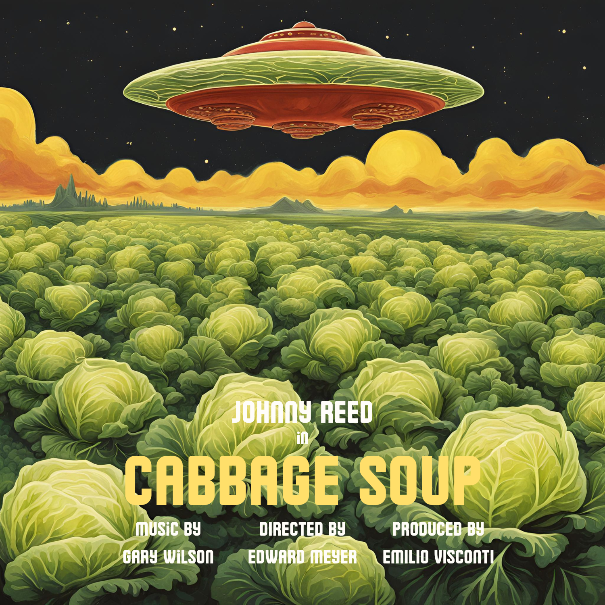

- Scène 5 - La Rencontre interprétée par Ismaëlle Lopez & Johnny Reed
- Scène 28 - Trio à deux interprétée par Audrey MacLaine & Johnny Reed
- Scène 42 - La Mort interprétée par Amy Preston & Johnny Reed
Filmographies [Télécharger]
Note aux joueurs : Le contenu des synopsis est fourni à titre purement récréatif et ne contient pas d’éléments déterminants pour le bon déroulement de la soirée.Johnny Reed
"Le retour du dragon" de Lee Hang Puei : Dans un futur fictif, en 2007, à "New Angeles" (le nouveau nom donné à la ville de Los Angeles après sa destruction partielle due à un terrible tremblement de terre), les gangs font régner la terreur, et la police est forcée d'imposer un couvre-feu pour protéger la population. C'est dans cette atmosphère apocalyptique que Koga Shuko, un homme d'affaires puissant et maléfique, cherche à contrôler la ville par le biais d'un médaillon chinois aux pouvoirs surnaturels et lié à une légende ancienne impliquant deux frères. Grâce à une sous-fifre, Linda Lash, il réussit à se procurer une partie du médaillon mais il lui manque l'autre moitié. Celle-ci se trouve entre les mains de deux frères, Jimmy et Billy Lee (Mark Castagnos et Johnny Reed) qui apprennent par leur tutrice, Satori Imada (July Pickson-Soul), qu'aucun homme ne doit jamais posséder à lui seul les deux parties du médaillon au risque de devenir invincible. Aidés par la chef du groupe "Power Cops" qui lutte contre les gangs, les frères Lee vont utiliser leur savoir en arts martiaux pour éviter que le mal ne l'emporte.
"La muraille infernale" de Mulos Kretzkerg : Entre le courage et l’effroi, l’humanité et la monstruosité, il existe une frontière qui ne doit en aucun cas céder. Jeremy Garcin (Johnny Reed), un mercenaire emprisonné dans les geôles de la Grande Muraille de Chine, découvre la fonction secrète de la plus colossale des merveilles du monde. L’édifice tremble sous les attaques incessantes de créatures monstrueuses, dont l’acharnement n’a d’égal que leur soif d’anéantir l’espèce humaine dans sa totalité. Il rejoint alors ses geôliers, une faction d’élite de l’armée chinoise, dans un ultime affrontement pour la survie de l’humanité. C’est en combattant cette force incommensurable qu’il trouvera sa véritable vocation : l’héroïsme.
"Mission Overlord" de Steven Von Sigol : Dans une Suisse dystopique tombée sous le régime fasciste d'une méchante tyrante du fromage, Hans vit une vie pure et simple dans les Alpes suisses. Son grand-père Alpöhi fait de son mieux pour le protéger, mais son désir de liberté lui vaut bientôt des ennuis avec les sbires de la dictatrice. Le jeune homme innocent se transforme en une force de combat inéluctable qui entreprend de libérer le pays des fascistes fous du fromage.
"Les frères Karamazov" de Piotr Piotrovitch : l'oeuvre de Dostoïevski devient un film d'action intense où la famille Karamazov est plongée dans une lutte explosive pour le pouvoir et la vengeance. Le père tyrannique, Fiodor Pavlovitch, dirige un empire criminel, attisant la rivalité entre ses fils : Dmitri, le guerrier impétueux (Johnny Reed); Ivan, le stratège brillant (Bill Pulmann); et Alexeï, l'infiltrateur vertueux (Steven Seagal). Le meurtre mystérieux de Fiodor déclenche une chasse à l'homme à travers la ville, avec des courses-poursuites, des affrontements explosifs et des révélations choc. Chaque frère doit affronter ses propres démons tout en déjouant des complots machiavéliques. Le climax culmine dans un procès explosif où la vérité éclate, redéfinissant leurs destins et l'équilibre des forces.
"Cabbage Soup" d'Edward Meyer : Dans un film d'action explosif, "Cabbage Soup" suit deux amis, Peter (Johnny Reed) et Steven (Robert Redford), qui vivent paisiblement dans leur village jusqu'à ce qu'un extra-terrestre mystérieux débarque, attiré par leur fameuse soupe aux choux. Mais cette fois, l'extra-terrestre n'est pas venu en paix : il est à la tête d'une invasion menaçant la Terre. Les deux amis, armés de leur ingéniosité et de leur courage, se lancent dans une série de batailles épiques pour repousser les envahisseurs. Entre explosions, poursuites et gadgets loufoques, ils doivent sauver leur village et la planète entière.
"L’espadon" d’Edward Meyer : "L'Espadon" est un film d'action palpitant où un ancien agent secret, surnommé l'Espadon, est forcé de sortir de sa retraite lorsqu'un cartel puissant kidnappe sa fille pour obtenir ses compétences légendaires. Utilisant sa maîtrise des arts martiaux, de l'espionnage, de la nage papillon et de la technologie de pointe, il mène une mission explosive à travers plusieurs continents pour la sauver. Trahi par des alliés et poursuivi par des ennemis impitoyables, il doit déjouer des complots internationaux et détruire le cartel de l'intérieur. Le film culmine dans une confrontation épique où l'Espadon dévoile son passé mystérieux et affronte son ultime ennemi : un poisson géant génétiquement modifié.
"Miss Marple" de William Kitch : Dans ce film d'action palpitant, "Miss Marple" suit James Marple, un ancien agent secret travesti en femme pour masquer son identité, qui découvre un complot international menaçant la sécurité mondiale. Lorsque des agents secrets sont mystérieusement assassinés, Marple utilise ses compétences en espionnage et en arts martiaux pour infiltrer une organisation criminelle. Se faisant passer pour une vieille détective, il navigue à travers des poursuites en voiture, des combats acrobatiques et des énigmes complexes pour déjouer les criminels. Le film culmine dans un duel spectaculaire dans une forteresse high-tech, où Marple révèle sa véritable identité et sauve le monde d'une catastrophe imminente.
Ismaëlle Lopez
"Les Noces de Dieu" de Joao César Monteiro : "Les Noces de Dieu" est un drame portugais qui explore les tensions religieuses et sociales dans un village isolé. L'histoire se concentre sur Ana, une jeune femme issue d'une famille très religieuse, qui tombe amoureuse de Paulo, un homme athée et étranger au village. Leur relation interdite déclenche un conflit intense entre les traditions conservatrices et les aspirations individuelles. Alors que le village se divise et que la pression sociale s'intensifie, Ana et Paulo doivent naviguer à travers les préjugés, les interdictions et les sacrifices personnels pour trouver leur chemin vers l'amour et la liberté. Le film explore les thèmes de la foi, de la tolérance et de la résistance à travers un récit émotionnellement poignant et profondément humain.
"Vou para casa" (je rentre à la maison) de Manoel de Oliveira : "Je rentre à la maison" est un drame portugais centré sur Maria, une femme d'âge moyen qui mène une vie tranquille à Lisbonne. Un jour, Maria perd ses clés dans des circonstances mystérieuses, déclenchant une série d'événements qui bouleversent sa routine paisible. À mesure qu'elle cherche désespérément ses clés perdues, Maria se retrouve confrontée à ses propres sentiments de perte et d'isolement, reflétant ses luttes intérieures plus profondes. Le film explore la manière dont la recherche physique des clés devient une métaphore de la quête de Maria pour retrouver un sens à sa vie et pour surmonter les défis émotionnels qui se dressent sur son chemin.
"Adão e Eva" (Adam et Eve) de Joaquim Leitão : "Adam et Eve" est un drame portugais qui explore les contrastes et les tensions entre deux âmes opposées. Adam est un boucher passionné par son métier ancestral, tandis qu'Eve est une végétarienne convaincue, militante pour les droits des animaux. Leur rencontre improbable à Lisbonne les confronte à des dilemmes moraux et à des conflits personnels profonds. Alors qu'ils naviguent à travers leurs différences et leurs convictions, leur relation devient le terrain d'une exploration intense sur l'éthique alimentaire, la nature humaine et les compromis nécessaires pour trouver l'amour et l'harmonie malgré leurs divergences fondamentales.
Audrey MacLaine
"L’appartement" de Stanley Bradford : "L'Appartement" est un drame captivant où Sarah (Audrey MacLaine), une journaliste en quête de renouveau, emménage dans un vieil appartement à New York après une rupture difficile. Elle découvre une série de lettres passionnées cachées dans une fissure du mur, écrites par l'ancienne locataire, Anna, à un amour mystérieux. Intriguée, Sarah commence à reconstituer l'histoire d'Anna tout en naviguant dans ses propres émotions et aspirations. Le film atteint son apogée lorsque les destins de Sarah et Anna se croisent de manière inattendue, dévoilant des vérités profondes et changeant la vie de Sarah à jamais.
"Un homme d’exception" de Ron Howard : "Un homme d'exception" relate l'histoire vraie de John Nash, brillant mathématicien confronté à la schizophrénie. Obsédé par ses théories révolutionnaires, Nash lutte contre sa maladie tout en tentant de maintenir sa carrière et sa relation avec sa femme Alicia. À travers des périodes de succès académique et de lutte personnelle, le film explore sa quête pour surmonter ses démons intérieurs et regagner son équilibre mental, jusqu'à ce qu'il reçoive enfin la reconnaissance qu'il mérite pour ses contributions exceptionnelles aux mathématiques.
"Deux sœurs et demie" de Ron Howard : "Deux soeurs et demie" est une comédie dramatique touchante qui suit la vie tumultueuse de trois sœurs : Emma (Emma Stone), Sophie (Rachel McAdams) et Kate la soeur cadette ayant perdu l'usage de ses bras à la suite d'une intoxication alimentaire (Audrey MacLaine). Après la mort de leur mère, elles héritent de sa maison de vacances délabrée, où elles se retrouvent pour l'été. Entre disputes, souvenirs et révélations familiales, les sœurs apprennent à se redécouvrir et à réparer leurs relations brisées. Le film explore les complexités de la famille, l'amour et le pardon, culminant dans une réconciliation émotive qui transforme leur avenir ensemble.
Amy Preston
"Return of cannibal bananas" de Roland Derminch : "Return of Cannibal Bananas" est un film d'horreur haletant où un groupe d'amis explore une plantation abandonnée en Louisiane, réputée pour son histoire mystérieuse de pratiques vaudou. Intrigués par les légendes locales, ils rencontrent un guérisseur vaudou qui les hypnotise pour libérer une ancienne malédiction. Les bananes de la plantation, gorgées de pouvoirs vaudou, prennent vie et commencent à chasser les intrus, transformant leur innocente excursion en un cauchemar sanglant. Piégés entre les illusions hypnotiques et la réalité déformée, les survivants doivent trouver un moyen de rompre le sort avant de devenir les prochaines victimes des bananes cannibales déchaînées.
"The woman from Janeiro" de Fred Olen Ray : "The Woman from Janeiro" est un film d'horreur terrifiant situé à Rio de Janeiro, où une jeune danseuse de samba prometteuse, Carla, découvre un vieux rouleau de musique ensorcelé. Intriguée par ses pouvoirs mystiques, elle commence à l'interpréter lors de ses performances, attirant l'attention d'une entité démoniaque liée à la samba. Au fur et à mesure que Carla devient obsédée par la musique ensorcelée, elle perd le contrôle de sa vie et de ses proches, tandis que des événements sinistres et surnaturels commencent à se produire autour d'elle. Carla doit maintenant lutter pour sauver son âme et échapper à l'emprise mortelle de la danse maudite avant qu'il ne soit trop tard.
"L’amour extra-large" des Frères Farelly : "L'amour extra-large" (ou "Shallow Hal" en anglais) est une comédie romantique des frères Farrelly. L'histoire tourne autour de Hal, un homme superficiel qui ne s'intéresse qu'aux apparences physiques des femmes. Après une séance d'hypnose, Hal voit uniquement la beauté intérieure des gens, ce qui le conduit à tomber amoureux de Rosemary, une femme obèse mais au cœur d'or. Malgré les préjugés de son entourage, Hal est déterminé à faire fonctionner leur relation, apprenant finalement une leçon précieuse sur la véritable beauté et l'amour authentique.
"The Zimmerman attitude" de Zack Zanuck : "The Zimmerman Attitude" est une comédie américaine centrée sur Zoe Zimmerman, une ingénieure talentueuse mais excentrique. Après des années de recherche dans son garage, elle invente une chasse d'eau révolutionnaire qui promet d'être plus efficace et écologique que toutes les autres. Déterminée à faire valoir son invention dans un monde dominé par les hommes de l'industrie des toilettes, Zoe se lance dans une série d'aventures hilarantes et de défis inattendus. Entre les tests rigoureux, les rivalités avec des géants de la plomberie, et les malentendus burlesques, Zoe doit prouver que sa "Zimmerman Attitude" peut non seulement changer le monde des salles de bains, mais aussi réécrire les règles du succès professionnel pour les femmes inventrices.
Productions Visconti

"Cabbage Soup" d'Edward Meyer : Dans un film d'action explosif, "Cabbage Soup" suit deux amis, Peter (Johnny Reed) et Steven (Robert Redford), qui vivent paisiblement dans leur village jusqu'à ce qu'un extra-terrestre mystérieux débarque, attiré par leur fameuse soupe aux choux. Mais cette fois, l'extra-terrestre n'est pas venu en paix : il est à la tête d'une invasion menaçant la Terre. Les deux amis, armés de leur ingéniosité et de leur courage, se lancent dans une série de batailles épiques pour repousser les envahisseurs. Entre explosions, poursuites et gadgets loufoques, ils doivent sauver leur village et la planète entière.
Le film "Cabbage Soup" (1992) est l'un des premiers films d'Edward Meyer produits par Emilio Visconti avec une musique de Gary Wilson. Il s'agit d'un remake d'un film de science-fiction français des années 80.
"Cabbage Soup" d'Edward Meyer : Dans un film d'action explosif, "Cabbage Soup" suit deux amis, Peter (Johnny Reed) et Steven (Robert Redford), qui vivent paisiblement dans leur village jusqu'à ce qu'un extra-terrestre mystérieux débarque, attiré par leur fameuse soupe aux choux. Mais cette fois, l'extra-terrestre n'est pas venu en paix : il est à la tête d'une invasion menaçant la Terre. Les deux amis, armés de leur ingéniosité et de leur courage, se lancent dans une série de batailles épiques pour repousser les envahisseurs. Entre explosions, poursuites et gadgets loufoques, ils doivent sauver leur village et la planète entière.
Le film "Cabbage Soup" (1992) est l'un des premiers films d'Edward Meyer produits par Emilio Visconti avec une musique de Gary Wilson. Il s'agit d'un remake d'un film de science-fiction français des années 80.

"L'Espadon" d'Edward Meyer : "L'Espadon" est un film d'action palpitant où un ancien agent secret (Johnny Reed), surnommé l'Espadon, est forcé de sortir de sa retraite lorsqu'un cartel puissant kidnappe sa fille (Darlene McCullough) pour obtenir ses compétences légendaires. Utilisant sa maîtrise des arts martiaux, de l'espionnage, de la nage papillon et de la technologie de pointe, il mène une mission explosive à travers plusieurs continents pour la sauver. Trahi par des alliés et poursuivi par des ennemis impitoyables, il doit déjouer des complots internationaux et détruire le cartel de l'intérieur. Le film culmine dans une confrontation épique où l'Espadon dévoile son passé mystérieux et affronte son ultime ennemi : un poisson géant génétiquement modifié. Le film "L'Espadon" a été tourné en 1999 chez José Maria de Medeiros, l'un des hommes les plus riches du Portugal.
Il s'agit de l'un des plus beaux films de tatane de la toute fin du 20ème siècle. Un film d'Edward Meyer, produit par Emilio Visconti, sur une musique de Gary Wilson et avec Johnny Reed.